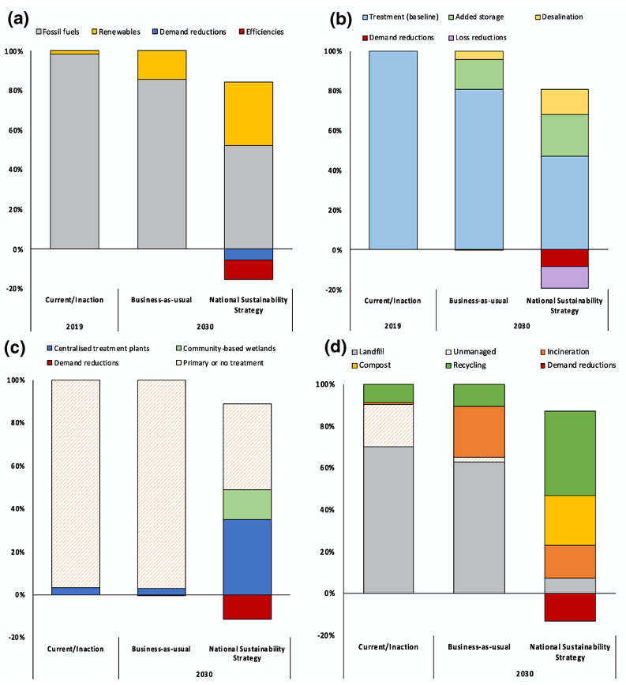
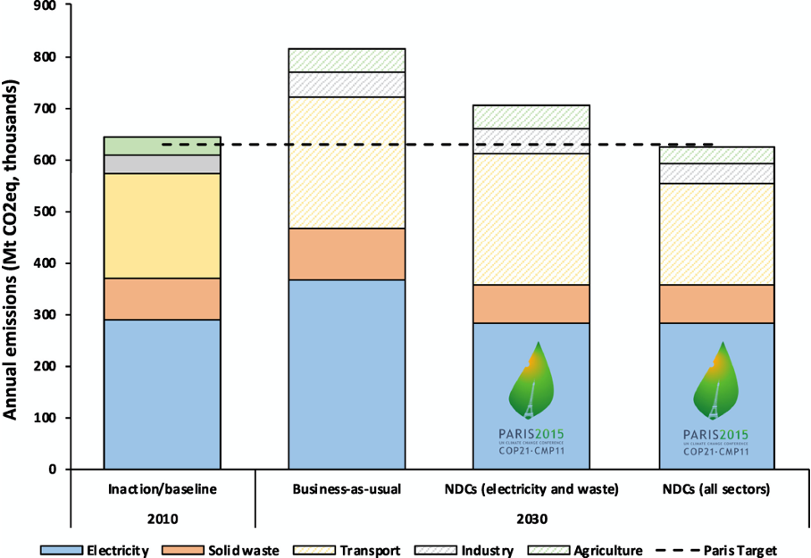

This mini-lecture introduces the concept of future infrastructure strategies, lists examples of real-world strategies for different sectors, as well as cross-sectoral strategies, and describes how attribute information can be added to different strategies to enable their comparison.
This mini-lecture will introduce:
What infrastructure strategies are
Why these are useful
Examples of real-world infrastructure strategies
How to add attribute information to each strategy to enable their comparison
How to bring these elements together.
Infrastructure strategies are visions of the future that include a set of interventions or investments within or across infrastructure sectors in order to achieve certain targets, such as climate or development targets (Vuuren et al. 2011).
An infrastructure strategy is defined here as a portfolio of interventions designed to meet a pre-defined set of performance targets. A strategy can contain both demand- and capacity-side interventions and both hard and soft interventions, for example grey and green infrastructure investments, but also enabling environmental policy interventions. Often, a combination of these different interventions is necessary to achieve certain sustainability or climate targets. Taken together, these interventions form ‘strategies,’ and in essence are a set of future investment plans.
Strategic planning of infrastructure for sustainable development is a grand challenge. To date, most infrastructure development projects have failed to reach sustainable development outcomes, which can be attributed to a number of reasons. These include a fragmented approach to infrastructure planning, which typically lacks visioning for the future (Harris, Shealy, and Klotz 2016). National decision-makers often focus on short-term visions and immediate political agendas (Hornsby et al. 2017). Potential long-term impacts on environmental, social and economic sustainability outcomes are generally of secondary concern, yet are crucial for meeting the UN Sustainable Development Goals (SDGs), and the Paris Agreement.
One means by which to strategically consider long-term goals and agendas in infrastructure planning is the development of various national infrastructure strategies and then evaluating these strategies against their performance on key targets that are aligned with the SDGs, the Paris Agreement, or other global or national agreements (Hall et al. 2016; Adshead et al. 2019; Fuldauer et al. 2019). These strategies embed different visions of the future, and can represent certain views of how a desirable (or undesirable) future infrastructure might look like. This vision-driven process enables strategically assessing different strategies and thereby understanding and visualising their performance before decisions are made. Using evidence at the outset of the infrastructure planning process can help depoliticise infrastructure investments and provide a means by which to leverage infrastructure decisions to meet climate and development targets. Further, such strategic planning sets an agenda for design, implementation and monitoring of strategies (Sachs et al. 2019). Ideally, the process of infrastructure strategy planning and visioning can itself contribute to sustainable development (Fuldauer et al. 2019).
Example strategies might include a development-aligned strategy, which includes ambitious investments to meet certain SDG, climate-, or other global or national targets. A further strategy might include a business–as–usual strategy, thereby assuming similar infrastructure investments to those in the past. A pipeline strategy might include different investments as proposed in national documents or by national stakeholders. An inaction strategy – comprised of no further investments – can be used as a comparison or baseline strategy.
Previous country-specific assessments have developed infrastructure strategies for specific sectors, such as the waste sector (Fuldauer et al. 2019) or across different sectors (Adshead et al. 2019, 2021; Ives et al. 2019).
Sector-specific infrastructure strategies in the waste sector, for example, include a ‘circular-economy’ strategy. This strategy envisions that waste prevention, re-use and recycling potentials are met by strong waste reduction incentives, with the aim of meeting waste-specific SDG targets. This strategy is comprised of a set of ambitious i) demand-side options, such as a re-use centre for specific waste sources ii) supply-side options, such as new recycling stations and home composting and iii) policy options, such as a reduction in the harbour tax. A further strategy, the ‘technology-led’ strategy, reflects another vision of the future of waste, which includes investments into building new recycling infrastructure. These two different strategies are compared to an ‘inaction’ strategy, which assumes no further investment in waste management (Fuldauer et al. 2019) (see Figure 6.1.1).
Figure 6.1.1: Waste infrastructure strategies in Curaçao, by waste treated (Fuldauer et al. 2019).
Infrastructure strategies across sectors (energy, water, waste, wastewater) include a ‘national sustainability strategy,’ a ‘business-as-usual' and an ’inaction’ strategy (Adshead et al. 2021), which are made up of different interventions (see Figure 6.1.2).

Figure 6.1.2: Comparison of infrastructure strategy portfolios for current/inaction, business‐as‐usual, and national sustainability strategy for (a) electricity (b) water supply (c) wastewater and (d) solid waste (Adshead et al. 2021).
Each intervention under each strategy, whether a sector-specific or cross-sectoral one, must be assigned certain attributes to enable strategy comparison. In Figure 6.1.1, we have seen the use of the attribute ‘waste treated by type’ to compare different strategies. For cross-sectoral strategies, it is critical to collect attribute data that is consistent and can be applied across sectors. This includes, for example, cost attributes, capacity margin attributes, or annual emissions (see Figure 6.1.3 for an example of a comparison of emissions across strategies).

Figure 6.1.3: Emissions by sector compared to a 2010 baseline, showing a business‐as‐usual case, and reductions attributed to emissions targets modelled in the electricity and waste sectors (Adshead et al. 2021).
In this lecture, we identified that meeting global or national targets requires strategic planning of new investments and interventions. To date, most decisions on infrastructure projects have been driven by short term visions and political priorities. Infrastructure strategies are portfolios of interventions designed to meet a pre-defined set of performance targets. Developing and comparing various strategies can help provide evidence to decision-makers on which investments to prioritise, thereby depoliticising infrastructure decisions. A well justified infrastructure strategy can further increase confidence that investments will yield returns while being consistent with environmental, economic, and social commitments (Adshead et al. 2021). Infrastructure strategies can focus on a specific sector, or include cross-sectoral investments and commitments. Strategies are made up of a set of specific interventions or investments, which are assigned a number of comparable attributes, such as costs, carbon, capacity or other service provision information. Using strategies in infrastructure planning, informed by quantified attributes, can help governments and decision-makers map out pathways towards sustainability, climate resilience and other global goals.